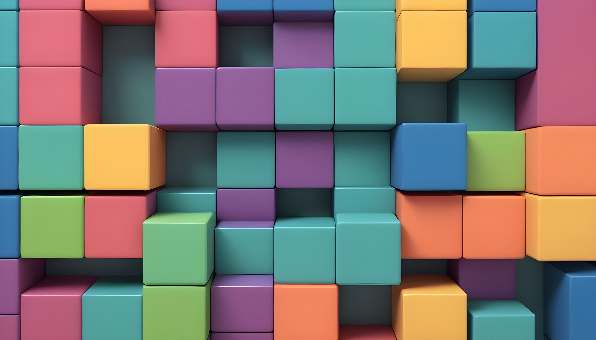

Best Fonts Every Designer
1. Helvetica
Helvetica is a timeless and versatile font that has been a favorite among designers for decades. Its clean and simple design makes it suitable for a wide range of applications, from print to digital media. Helvetica is known for its legibility and neutrality, making it a great choice for corporate and professional designs.
2. Arial
Arial is another classic font that is widely used in both print and digital media. It is similar to Helvetica but has subtle differences in its design. Arial is known for its clarity and readability, making it a popular choice for body text and headlines.
3. Times New Roman
Times New Roman is a serif font that is commonly used in print media, such as newspapers and magazines. It is known for its traditional and elegant appearance, making it suitable for formal and professional designs. Times New Roman is often used for body text but can also be used for headlines and titles
4. Futura
Futura is a geometric sans-serif font that has a modern and futuristic appearance. It is known for its clean lines and geometric shapes, making it a popular choice for modern and minimalist designs. Futura is often used for headlines, logos, and branding projects
5. Garamond
Garamond is a classic serif font that is known for its elegance and sophistication. It is based on the designs of 16th-century French engraver Claude Garamond and has a timeless appeal. Garamond is often used for body text and can add a touch of class to any design
6. Bodoni
Bodoni is a serif font that is known for its high contrast between thick and thin lines. It was designed by Italian typographer Giambattista Bodoni in the late 18th century and has a distinctive and elegant appearance. Bodoni is often used for headlines, posters, and other display purposes
7. Avenir
Avenir is a geometric sans-serif font that was designed by Adrian Frutiger in 1988. It is known for its clean and modern appearance, making it a popular choice for branding and corporate designs. Avenir is often used for headlines, logos, and other display purposes
8. Roboto
Roboto is a sans-serif font that was designed by Google for use in its Android operating system. It is known for its friendly and modern appearance, making it a popular choice for digital designs. Roboto is often used for body text, headlines, and other text elements in digital interfaces
9. Lato
Lato is a sans-serif font that was designed by Polish designer Łukasz Dziedzic. It is known for its versatility and readability, making it a popular choice for a wide range of design projects. Lato is often used for body text, headlines, and other text elements in both print and digital media10. Montserrat
Montserrat is a sans-serif font that was inspired by the signage found in the Montserrat neighborhood of Buenos Aires. It is known for its modern and elegant appearance, making it a popular choice for branding and display purposes. Montserrat is often used for headlines, logos, and other text elements that require a bold and impactful look.